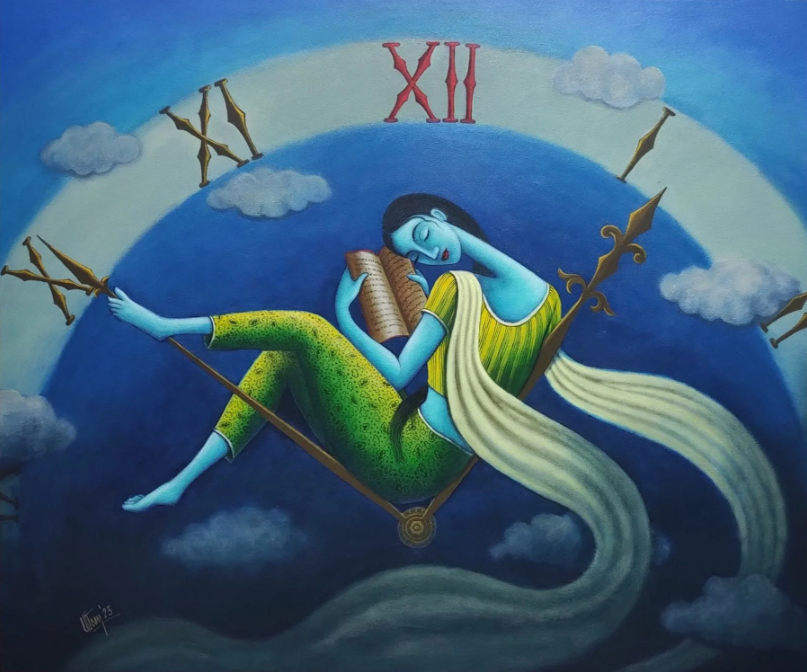

सपनाको क्यानभास
सपनाको क्यानभास
तारेभिरमा लुकेका सपना, नचाहिँदो पीडा जस्तो,
म भुल्न खोज्छु, तर रातले मलाई बाँध्छ,
हर क्षणको रंगीन क्यानभासमा मृत्युको झझल्को।
छातीमा बोझ, काँचको मनजस्तै चकनाचुर,
त्यहीँ म फर्किन्छु, सधैंको पीडामा फसेको,
तारेभिरमा लुकेका सपना, नचाहिँदो पीडा जस्तो।
आशाको रेखा, चिहानले लिपिएको क्यानभास,
जिवनले मृत्युको नजिक ल्याउने मेला,
हर क्षणको रंगीन क्यानभासमा मृत्युको झझल्को।
अन्धकारमा झुल्किन्छन् तिम्रा आँशु,
जुन किरणमा लुकेका छन् मेरी आत्माको रंग,
तारेभिरमा लुकेका सपना, नचाहिँदो पीडा जस्तो।
मध्यरातको एकान्तमा बाँच्ने प्रयास,
मृत्युले पनि मायाको छाया बुनेको,
हर क्षणको रंगीन क्यानभासमा मृत्युको झझल्को।
तिमीले रंग्याएको यो सपनाको आकाश,
मलाई पुर्याउँछ जीवनको अन्तिम किनारमा,
तारेभिरमा लुकेका सपना, नचाहिँदो पीडा जस्तो,
हर क्षणको रंगीन क्यानभासमा मृत्युको झझल्को।